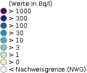

<!DOCTYPE html>
<html lang="en"  style="font-family:sans-serif;"></html>
<!-- <html lang="en"> -->
  <head>
    <meta charset="UTF-8" />
    <!-- <link rel="icon" type="image/x-icon" href="https://openlayers.org/favicon.ico" />
    <meta name="viewport" content="width=device-width, initial-scale=1.0" /> -->
    <link rel="stylesheet" href="node_modules/ol/ol.css">
    <link rel="Ol_styles" href="">
    <title>Geobase</title>
  </head>
  

    <style>
      body {
    display: flex;
    flex-direction: column;
    min-height: 100vh;
}
      .map {
  width: 100%;
  height: 100px;
  position: absolute;

  }

      .header {

  padding-bottom: 0px; /* some padding */
  padding-top: 10px;
  padding-left: 10px;
  background: #4D86F6; /* blue background */
  color: white; /* white text color */
  position: relative; 

  }

      .logo{
  padding-top: 0%; 
      }

      .footer{
   position: absolute;
    bottom: 0;
    width: 100%;
    height: 20px;
 
      }

      .titles{
  text-align: justify;        
      }

      /* Style the top navigation bar */
      .navbar {
  overflow: hidden; /* Hide overflow */
  background-color: #4D86F6; /* Dark background color */
  border: 2px solid #4D86F6;
  }

      /* Style the navigation bar links */
      .navbar a {
  float: left; /* Make sure that the links stay side-by-side */
  display: block; /*Change the display to block, for responsive reasons (see below)*/
  color: white; /* White text color */
  text-align: center; /* Center the text */
  padding: 5px 10px; /* Add some padding */
  text-decoration: none; /* Remove underline */
  
  }     
      /* Right-aligned link */
      .navbar a.right {
  float: right; /* Float a link to the right */

  }

      /* Change color on hover/mouse-over */
      .navbar a:hover {
  background-color: #ddd; /* Grey background color */
  color: rgb(42, 42, 42); /* Black text color */
  }

      * {
  box-sizing: border-box;
  }

      /* Column container */
      .row {
  display: flex;
  flex-wrap: wrap;
  }

      /* Create two unequal columns that sits next to each other */

      /* Sidebar/left column */
      .side {
  width: 18%; /* Set the width of the sidebar */
  background-color: #fcfdfd; /* Grey background color */
  padding: 20px; /* Some padding */
  position: relative; 
  height: 400px;
  width: 15%;


  }

    /* Responsive layout - when the screen is less than 700px wide, make the two columns stack on top of each other instead of next to each other */
  @media screen and (max-width: 700px) {
      .row {
  flex-direction: column;
  }
  }

  /* Responsive layout - when the screen is less than 400px wide, make the navigation links stack on top of each other instead of next to each other */
  @media screen and (max-width: 400px) {
      .navbar a {
  float: none;
  width: 100%;
  }
  }

  .content {
    flex-grow: 1; /* This makes the content grow to fill the space, pushing the footer down */
}

      .footer {

  padding: 5px; /* Some padding */
  display: table;
  width: 100%;
  height: 10px;

  table-layout: fixed; 
  background: #ddd; /* Grey background */
  }
      .footer span{
  display: table-cell;
  text-align: center;
  padding: 0px;
      }
    

  /* Popup Layout*/
  .overlay-container{
  background: rgba(77,134,247,0.7);
  color: white;
  width: 190px;
  border-radius: 5px;
  text-align: center;
  padding: 2px 0;
  position: absolute;
  z-index: 1;
  bottom: 100%;
  left: 50%;
  margin-left: -80px;
  transition: opacity 100ms ease-in;

      }

      .overlay-container #feature-unit::after{
  content:'';
  position: absolute;
  z-index: 1;
  top: 100%;
  left: 50%;
  margin-left: -10px;
  border-width: 10px;
  border-style: solid;
  border-color: rgb(42, 42, 42);
      }

      .overlay-container #feature-value::after{
  content:'';
  /* position: absolute; */
  z-index: 1;
  top: 100%;
  left: 50%;
  margin-left: -10px;
  border-width: 10px;
  border-style: solid;
  border-color: black;
      }

      .overlay-container #feature-valueC::after{
  content:'';
  position: absolute;
  z-index: 1;
  top: 100%;
  left: 50%;
  margin-left: -10px;
  border-width: 10px;
  border-style: solid;
  border-color: black;
      }

      .overlay-container #feature-valueT::after{
  content:'';
  position: absolute;
  z-index: 1;
  top: 100%;
  left: 50%;
  margin-left: -10px;
  border-width: 10px;
  border-style: solid;
  border-color: black;
      }
      .LayerSwitch{
  margin-left: 15px;

      }

      .Legend{
  margin-left: 15px;

      }

  </style>

  
  <body>
    
    <div class="header">
      <div class="logo">
         
      </div>
      <div class="titles">
        <h2> Geobase </h2>
        <h3>Gamma Dose Rates:</h3>
      </div>
    </div>
    
    <div class="navbar">
      <a href="https://www.imis.bfs.de/geoportal/">Original Data</a>
      <a href="https://ogcapi.ogc.org/">OGC API Documentation</a>
      <a href="https://github.com/HsKA-OSGIS/geobase-back" class="right">Our GitHub</a>
      
    </div>
    
    <!-- <div id="map"></div>
    <script type="module" src="./main.js"></script> -->


    <div class="row">

        <div id="map" class="map"></div>
        <div class="side">
          <div class="Legend">
            <h3 >Legend:</h3>
            
          </div>
          
          <div class="LayerSwitch">
            <h3 style="font-family:verdana;">Layers</h3>
            <input type="radio" name="baseLayerRadioButton" value="OSMStandard" checked>OSM Standard<br>
            <input type="radio" name="baseLayerRadioButton" value="BlueMarble" >Blue Marble
          </div>
         
          
        </div>
      </div>


        <div class="footer" style="font-size: x-small; color: #666;">
            <span class="About_the_Team">
            <h4 style="color:  #444">About the Team</h4>
            <p style="text-align: justify">
                The Geobase Team:
                <br/>
                Alina Khamzatova, İrem Köz, Tanha Tanjimat, Abubakar Siddique.   
                </p>
            </span>
    
            <span class="projectDetails">
              <h4 style="color:  #5a5959">About the Project:</h4>
              <p style="text-align: justify"> This webpage presents the latest hourly gamma dose rates from German measurement stations, sourced from the <a rel="bfs" href="https://www.imis.bfs.de/geoportal/">Bundesamt für Strahlenschutz</a> website. It showcases data using the <a href="https://ogcapi.ogc.org/features/">new OGC API-Feature standard</a> instead of the traditional WFS standard, serving as an example for future adoptions of this OGC Standard. For more details on the new OGC API standard, refer to the link in the top menu bar. 
              </p>
          </span>  
    
            <span class="licensing">
              <h4 style="color:  #5a5959"> Licenses:</h4>
              <p style="text-align: justify">
              All code runs under the following licenses: <br> 
              GeoServer:&nbsp; <a href="https://opensource.org/license/gpl-2-0/">GNU General Public License version 2</a><br/> 
              Open Layers:&nbsp; <a href="https://opensource.org/licenses/BSD-2-Clause">BSD 2-Clause License</a><br/> 
              Geobase:&ensp;&nbsp; <a href="https://opensource.org/licenses/BSD-2-Clause">BSD 2-Clause License</a><br/>
              ODL Data:&emsp;&emsp; <a href="http://www.gesetze-im-internet.de/geonutzv/eingangsformel.html">GeoNutzV</a>, <a href="https://www.govdata.de/dl-de/by-2-0">DL-DE->BY-2.0</a> <br/>
              </p>
              </span>
    
            <span class="Contact">
            <h4 style="color:  #444"> Contact:</h4>
            <p style="text-align: justify">
            E-mail:geobase@xxx.xx<br/> 
            Phone: xxx.xxxxxxxx<br/>
            github:<a href="https://github.com/HsKA-OSGIS/geobase-back" >https://github.com/HsKA-OSGIS/geobase-back</a>
    
            </p>
            </span>  
        </div>
<!-- 
<div class="overlay-container">
  <span class='overlay-text' id='feature-value'></span><br>
  <span class='overlay-text' id='feature-valueC'></span><br>
  <span class='overlay-text' id='feature-valueT'></span><br>
  <span class= 'overlay-text' id='feature-unit'></span> 
</div>  
 --> 

<!-- Pointer events polyfill for old browsers, see https://caniuse.com/#feat=pointer -->
<link rel="stylesheet" href="https://cdn.jsdelivr.net/gh/openlayers/openlayers.github.io@master/en/v6.5.0/css/ol.css" type="text/css"/>
<!-- <script src="https://cdn.jsdelivr.net/gh/openlayers/openlayers.github.io@master/en/v6.5.0/build/ol.js"></script>-->
<script src="https://unpkg.com/elm-pep@1.0.6/dist/elm-pep.js"></script>
<script type="module" src="main.js"></script>
<script type="text/javascript" src="config/configurations.js"></script>
<script src="https://cdn.jsdelivr.net/npm/elm-pep@1.0.6/dist/elm-pep.js"></script>
  </body>
</html>
